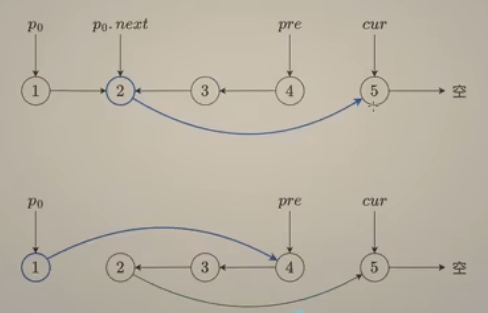
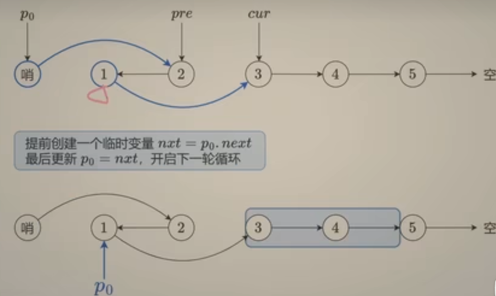

3. 链表 3.1 删除节点
要想删除节点 node ，必须在 node 的前一个节点执行删除操作。
例如链表 1→2→3，要想删除 2，必须在节点 1 处操作，也就是把节点 1 的 next 更新为节点 3。
如果头节点可能被删除，那么要在头节点之前添加一个哨兵节点 （dummy node），这样我们无需特判头节点被删除的情况，从而简化代码逻辑。
算法细节
初始化哨兵节点 dummy，其 next 为 head。
遍历链表，初始化 cur=dummy。
循环直到 cur 的下一个节点为空。
如果 cur 的下一个节点的值等于 val，那么删除下一个节点，把 cur.next 更新为 cur.next.next。
如果 cur 的下一个节点的值不等于 val，那么不删除下一个节点，继续看下下一个节点是否要删除，即更新 cur 为 cur.next。
循环结束，返回 dummy.next，即删除节点后的新链表的头节点。
1 2 3 4 5 6 7 8 9 10 11 12 13 14 class Solution {public ListNode removeElements (ListNode head, int val) {ListNode dummy = new ListNode (0 , head);ListNode cur = dummy;while (cur.next != null ) {if (cur.next.val == val) {else {return dummy.next;
3.2 插入节点
算法：
遍历链表，在当前节点 cur 后面插入新节点，同时新节点指向 cur 的下一个节点。
插入后，cur 更新为 cur.next.next，也就是 cur 原来的下一个节点，开始下一轮循环。
循环直到 cur 没有下一个节点为止。
3.3 反转链表
注：当我们遇到需要倒着遍历链表的情况，就可以通过反转实现（当然也可以用递归）
3.3.1 反转整个链表 1 2 3 4 5 6 7 8 9 10 11 12 13 class Solution {public ListNode reverseList (ListNode head) {ListNode pre = null ;ListNode cur = head;while (cur != null ) {ListNode nxt = cur.next;return pre;
while循环里的四行是核心，顺序不能改
记住一次循环只会更改一个节点的next指针
3.3.2 反转部分链表 1 2 3 4 5 6 7 8 9 10 11 12 13 14 15 16 17 18 19 20 21 22 23 class Solution {public ListNode reverseBetween (ListNode head, int left, int right) {ListNode dummy = new ListNode (0 , head);ListNode p0 = dummy;for (int i = 0 ; i < left - 1 ; i++) {ListNode pre = null ;ListNode cur = p0.next;for (int i = 0 ; i < right - left + 1 ; i++) {ListNode nxt = cur.next;return dummy.next;
注意循环不变量：反转后从原链表顺序上看pre指向被反转序列的末尾，而cur指向被反转序列的下一个节点

p0是反转序列前的最后一个节点，但是可能出现从头翻转的情况，因此需要引入哨兵dummy node
3.3.3 分组反转
要先遍历一次求出链表总长度，只有当剩余长度大于等于k才能进行反转

在一组反转后要更新p0为上一次反转的链表的最后一个节点
1 2 3 4 5 6 7 8 9 10 11 12 13 14 15 16 17 18 19 20 21 22 23 24 25 26 27 28 29 class Solution {public ListNode reverseKGroup (ListNode head, int k) {int n = 0 ;ListNode p = head;while (p != null ){ListNode dummy = new ListNode (0 , head);ListNode p0 = dummy;while (n >= k){ListNode pre = null ;ListNode cur = p0.next;for (int i = 0 ; i < k; i++){ListNode nxt = cur.next;ListNode nxt = p0.next;return dummy.next;
3. 4 前后指针
目的是求链表的倒数第k个节点
算法思想是让前后两个指针相距k，这样当右指针为null时左指针恰好为倒数第k个节点
1 2 3 4 5 6 7 8 9 10 11 12 13 14 15 16 17 class Solution {public ListNode removeNthFromEnd (ListNode head, int n) {ListNode dummy = new ListNode (0 , head);ListNode left = dummy;ListNode right = dummy;while (n-- > 0 ) {while (right.next != null ) {return dummy.next;
3.5 快慢指针
目的是求链表的中间节点
算法思想是维护快慢两个指针，快的一次走两个节点，慢的一次走一个，这样快的遍历完时慢的恰好到中间（偶数长度情况下是中间偏右那个）
1 2 3 4 5 6 7 8 9 10 11 class Solution {public ListNode middleNode (ListNode head) {ListNode slow = head;ListNode fast = head;while (fast != null && fast.next != null ) {return slow;
3.6 双指针
用两个指针分别遍历链表，它们各自遵循自己的规则遍历特定节点（例如奇偶下标，或是值满足某个大小关系）
也可以是分别遍历两个链表，做一些判断后将它们指向的节点连起来，最终得到一个新链表